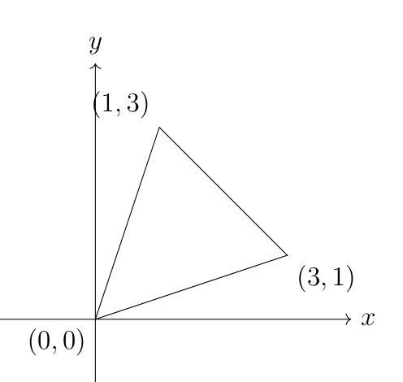
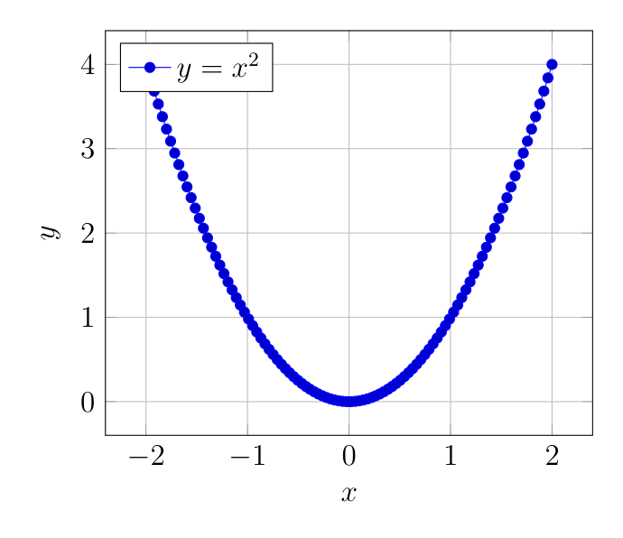
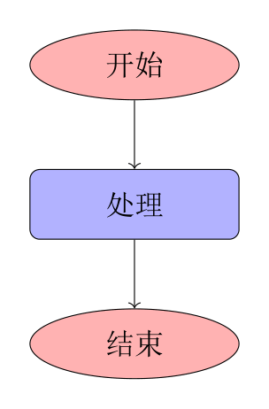
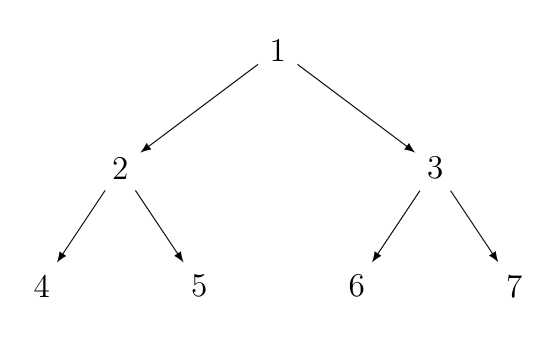
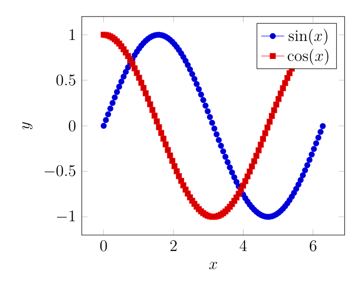
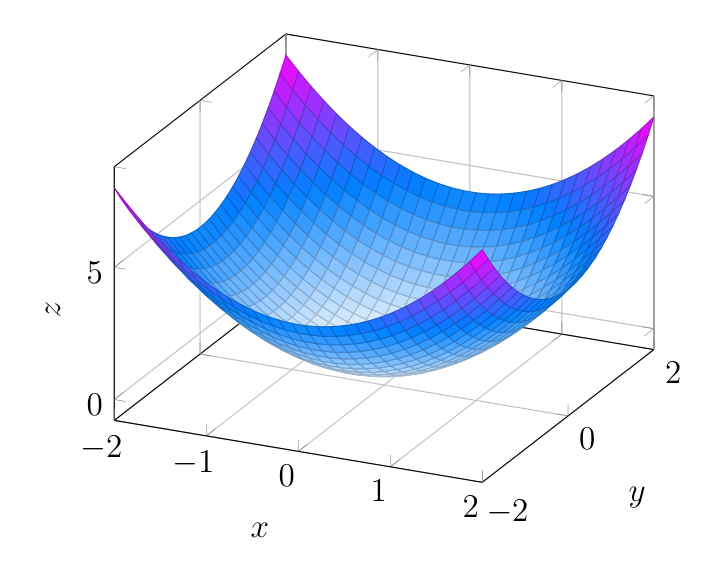
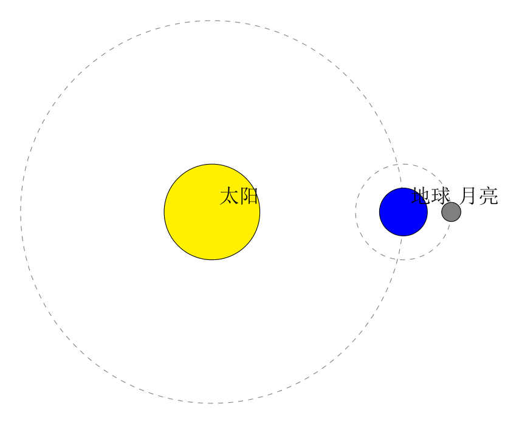
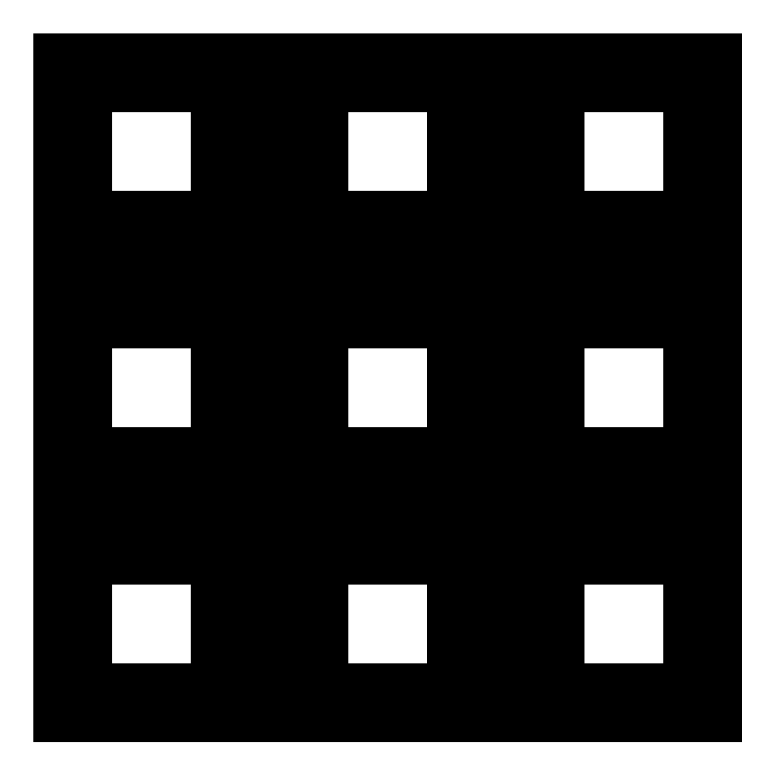
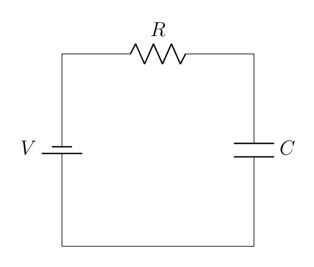

实验课 03：绘图（选学）
本题集来自《科技论文写作》课程实验课 03《LaTeX 的使用（绘图）》。这一讲是选学内容，讲两件事:
TikZ：通用矢量绘图，适合画示意图、流程图、树、几何图形；
pgfplots：建立在 TikZ 之上的数据绘图宏包，适合画函数曲线、实验数据图、三维曲面。
每道题都附有实际编译渲染的结果图（TeX Live 2026 + XeLaTeX），代码均可直接编译。
论文里的插图有两种来源：MATLAB / Python 画好导出图片，或者直接用 TikZ/pgfplots 画。前者的缺点是分辨率和对齐难控制、字体不统一；后者的优点是矢量、字体与正文完全一致、可复用数据，缺点是三维图编译慢、上手成本高。
编译环境与导言区
导言区:
\documentclass{ctexart}
\usepackage{tikz}
\usepackage{pgfplots}
\usetikzlibrary{shapes.geometric, arrows, trees}
\pgfplotsset{compat=1.16} % 兼容版本，必写
\usepackage{animate} % 如果需要动态展示
\usetikzlibrary{3d}
\usepackage{circuitikz} % 电路图（拓展题用）
\usepackage{biblatex}
\addbibresource{references.bib}
编译方式:
含中文 → XeLaTeX。
\pgfplotsset{compat=...}必须设置。不写会有警告，且不同版本的默认行为不一致，画出来的图可能和教程里不一样。这里取1.16，用 TeX Live 2026 编译时会提示"建议升到 1.18"——升不升都能跑，但同一篇文档里要保持一致。TikZ 图编译较慢，调试时可以把图单独放在一个文件里编译，成功了再嵌回论文。
实验题 1：绘制一个坐标系中的三角形
题目：使用 TikZ 绘制一个二维直角坐标系中的三角形，并标注每个顶点的坐标（顶点为 (0,0)、(1,3)、(3,1)）。提示使用 \draw 画边、\node 标注顶点。
答案:
\begin{tikzpicture}
% 绘制坐标轴
\draw[->] (-2,0) -- (4,0) node[right] {$x$};
\draw[->] (0,-2) -- (0,4) node[above] {$y$};
% 绘制三角形
\draw (0,0) -- (3,1) -- (1,3) -- cycle;
% 标注顶点
\node at (0,0) [below left] {$(0,0)$};
\node at (3,1) [below right] {$(3,1)$};
\node at (1,3) [above left] {$(1,3)$};
\end{tikzpicture}
编译结果:

说明:
tikzpicture环境内部就是绘图区，坐标默认以左下角为原点，单位是 cm。\draw[->] A -- B画一条带箭头的线段；->是箭头样式，可选-（无箭头）、<-、<->、-latex、-stealth等。-- cycle自动把路径首尾闭合，画三角形/多边形时不用手写回到起点。\node at (坐标) [位置参数] {内容}在指定坐标放文本节点。位置参数决定文字相对坐标点的偏移方向：above、below、left、right、above left、below right等。\node的坐标和选项哪个在前都可以，\node at (0,0) [below left] {...}等价于\node[below left] at (0,0) {...}。坐标轴画得比图形范围大一圈（x 从 −2 到 4，y 从 −2 到 4），是让坐标轴"伸出"三角形的常规做法。
想画更规范的函数图像，用
pgfplots的axis环境（见下一题），比手画坐标轴省事得多。
实验题 2：绘制带网格和标注的函数 y = x²
题目：使用 pgfplots 绘制 y = x^2 的函数图像，为坐标轴加上网格和标注。
答案:
\begin{tikzpicture}
\begin{axis}[
xlabel={$x$}, ylabel={$y$},
grid=major, % 启用网格
domain=-2:2, samples=100,
legend pos=north west
]
\addplot {x^2}; % 绘制函数 y = x^2
\addlegendentry{$y = x^2$}
\end{axis}
\end{tikzpicture}
编译结果:

说明:
\begin{axis}环境是 pgfplots 的核心，它会自动画坐标轴、刻度、标签，比 TikZ 手画省事得多。grid=major只画主刻度网格；grid=both会同时开主次网格（更密），grid=minor只画次网格。domain=-2:2, samples=100控制 x 的取样范围和点数。samples太少曲线会显得折线化，太多编译变慢，50~100 一般够用。\addlegendentry必须紧跟在对应的\addplot之后，中间隔了别的命令，图例就会串位。legend pos=north west把图例放在左上角，可选north east、south east、south west、outer north east（放到图外）。pgfplots 会自动给曲线分配颜色和线型；曲线多了以后建议显式写
\addplot[blue, thick]。学术论文里画数据图通常不建议加网格，期刊插图讲究简洁。这里按题目要求加即可。
实验题 3：绘制流程图
题目：绘制一个简单的流程图，包括「开始」「处理」「结束」三个步骤，并使用箭头连接。提示使用 \node 和 \draw[->]。
答案:
\begin{tikzpicture}[node distance=2cm]
% 定义节点样式
\tikzstyle{process} = [rectangle, rounded corners, minimum width=3cm, minimum height=1cm, draw=black, fill=blue!30]
\tikzstyle{startstop} = [ellipse, minimum width=3cm, minimum height=1cm, draw=black, fill=red!30]
% 定义流程图节点
\node (start) [startstop] {开始};
\node (process) [process, below of=start] {处理};
\node (stop) [startstop, below of=process] {结束};
% 连接节点
\draw[->] (start) -- (process);
\draw[->] (process) -- (stop);
\end{tikzpicture}
编译结果:

说明:
\usetikzlibrary{shapes.geometric}提供ellipse、diamond、trapezium等节点形状（rectangle是内置的），画流程图必须加载。\tikzstyle{名字} = [...]定义可复用的节点样式，流程图里所有椭圆长一个样，定义一次到处用，改颜色只改一行。注意：
\tikzstyle在新版 TikZ 中已被标记为过时写法，推荐改用\tikzset{名字/.style={...}}，功能上等价。below of=start是旧版相对定位语法（没有等号）。TikZ 新语法是below=of start，需要\usetikzlibrary{positioning}——两者不能混用，用新语法时记得加库。node distance=2cm控制节点之间的默认间距。给节点命名（
(start)、(process)）之后，用\draw (start) -- (process);连线，TikZ 会自动找到节点边界，不会把线画进节点内部。流程图的形状约定：起止用椭圆/圆角矩形，处理用矩形，判断用菱形（
diamond），输入输出用平行四边形（trapezium）。TikZ 默认的箭头很细，缩略图上几乎看不见，放大才能看清。想要更醒目可以写
\draw[->, thick]，或\draw[-{Stealth[length=2mm]}, thick]（后者需arrows.meta库）。复杂的流程图建议改用
smartdiagram宏包，或者干脆用 draw.io 画好导出——TikZ 画大流程图的性价比很低。
实验题 4：绘制一棵二叉树
题目：使用 TikZ 绘制一棵三层的二叉树，根节点值为 1，每个节点的子节点值分别为其值乘以 2 和乘以 2 加 1（即 1 → 2,3 → 4,5,6,7）。
答案:
\begin{tikzpicture}[
level 1/.style={sibling distance=4cm},
level 2/.style={sibling distance=2cm},
edge from parent/.style={draw,-latex}]
% 绘制根节点
\node {1}
child {node {2}
child {node {4}}
child {node {5}}
}
child {node {3}
child {node {6}}
child {node {7}}
};
\end{tikzpicture}
编译结果:

说明:
child { node {...} }是 TikZ 的树语法，嵌套的child就是子节点。注意整棵树最后要以分号;结束。level n/.style = {sibling distance = ...}控制第 n 层兄弟节点的水平间距。越往下节点越多，sibling distance要逐层减半，否则底层节点会互相重叠——这是画树的关键。edge from parent/.style控制父子连线的样式，这里设成{draw,-latex}（带箭头）。-latex需要\usetikzlibrary{arrows}，导言区里已经加载。这里没有给节点加圆圈边框，所以就是纯数字节点。想画成圆圈加一句
every node/.style={circle, draw, inner sep=1.5pt, minimum size=6mm}即可——minimum size很重要，否则内容是1的节点会比4的小一圈。\usetikzlibrary{trees}是child语法所在的功能库，导言区里已经加载。学有余力可以直接用
forest宏包，语法更简洁、自动排版宽度，画复杂树比原生 TikZ 舒服很多。
实验题 5：绘制正弦和余弦函数的叠加图
题目：绘制正弦函数 y = sin(x) 和余弦函数 y = cos(x)，并将它们叠加显示在同一张图中。
答案:
\begin{tikzpicture}
\begin{axis}[
xlabel={$x$}, ylabel={$y$},
domain=0:6.28, samples=100,
legend pos=north east
]
\addplot {sin(deg(x))}; % 绘制正弦函数
\addlegendentry{$\sin(x)$}
\addplot {cos(deg(x))}; % 绘制余弦函数
\addlegendentry{$\cos(x)$}
\end{axis}
\end{tikzpicture}
编译结果:

说明:
这是 pgfplots 最经典的坑：三角函数必须写
sin(deg(x))，不能写sin(x)。 pgfplots 内部按弧度计算三角函数，deg(x)会把 x 从「角度」转成「弧度」，所以sin(deg(x))的意思是「把 x 当作角度值求正弦」。 直接写sin(x)时 x 被当成弧度——在domain=0:6.28时画出来几乎一样，所以这个错误极其隐蔽；一旦改成domain=0:360，不写deg()就会画出 57 个周期。domain=0:6.28用小数代替2*pi。其实 pgfplots 认识pi，写domain=0:2*pi更清楚，二者等价。多条曲线直接写多个
\addplot即可，pgfplots 自动用不同颜色/线型区分，叠加在同一坐标系里。不设置
mark时是纯线条；论文里多条曲线建议同时区分颜色和标记形状（如mark=*/mark=square*），否则黑白打印时全糊。想让两张图上下排列并共用 x 轴，用
\begin{groupplot}（需\usepgfplotslibrary{groupplots}）。
实验题 6：绘制三维曲面图
题目：使用 pgfplots 绘制三维曲面图，曲面为 z = x^2 + y^2。提示使用 axis 环境并设置网格样式。
答案:
\begin{tikzpicture}
\begin{axis}[
xlabel={$x$}, ylabel={$y$}, zlabel={$z$},
domain=-2:2, y domain=-2:2,
samples=30,
colormap/cool,
grid=major
]
\addplot3[surf] {x^2 + y^2}; % 绘制曲面 z = x^2 + y^2
\end{axis}
\end{tikzpicture}
编译结果:

说明:
绘制三维图的写法是在
axis里用\addplot3（注意后面有个 3），命令是\addplot3[surf] {表达式};，surf表示绘制曲面。domain控制 x 范围，y domain控制 y 范围。两个都要写，只写domain时 y 会用默认值，曲面范围不对。samples=30是「每一维」的采样点数，网格总数是 samples²，也就是 900 个小面片。这是三维图最吃性能的地方——samples=50就是 2500 个面片，编译时间可能从几秒涨到一分钟。做作业时先用 20 调位置，最后再调到 30~40 出图。colormap/cool是colormap=cool的另一种写法，效果一样。pgfplots 内置多套配色：hot、cool、viridis、plasma、magma、jet、parula等（版本不同可用集合略有差异）。 论文配色建议用感知均匀且色盲友好的viridis/plasma，慎用彩虹色的jet（人眼对它的亮度分辨不均匀，容易误读数据）。view={方位角}{仰角}控制观察视角，默认是{25}{30}。多试几次找到最好看的角度。曲面本身的网格线由
surf的shader选项控制。常用的有:
| 写法 | 效果 |
|---|---|
\addplot3[surf] |
默认，彩色小面片 + 网格线 |
\addplot3[surf, shader=flat] |
平面着色，网格线清晰 |
\addplot3[surf, shader=interp] |
平滑着色，无网格线 |
\addplot3[mesh] |
只画网格线（线框） |
三维曲面图基本只在答辩和报告里用，期刊论文中几乎见不到（只能展示一个角度）。数据本身是二维的，优先用等高线图或热力图。
拓展：高阶绘图展示
六道实验题之后还有三个拓展例子，用来体会 TikZ 的边界在哪。
拓展 1：太阳系模型
\begin{tikzpicture}
% 太阳
\filldraw[fill=yellow] (0,0) circle (1cm) node[above right] {太阳};
% 绘制地球的轨道
\draw[gray, dashed] (0,0) circle (4cm);
% 地球
\filldraw[fill=blue] (4,0) circle (0.5cm) node[above right] {地球};
% 绘制月亮的轨道
\draw[gray, dashed] (4,0) circle (1cm);
% 月亮
\filldraw[fill=gray] (5,0) circle (0.2cm) node[above right] {月亮};
\end{tikzpicture}
编译结果:

说明：\filldraw[fill=颜色] (圆心) circle (半径) 画实心圆；\draw[gray, dashed] 画虚线轨道。三个天体只是静态画在一条直线上，不是动画——animate 宏包配合 \multiframe 才能做真正的动画（且需要 Acrobat 之类的阅读器支持）。
拓展 2：谢尔宾斯基地毯
\begin{tikzpicture}
\fill[black] (0,0) rectangle (9,9);
\foreach \x in {0,3,6}
\foreach \y in {0,3,6}
{
\fill[white] (\x+1,\y+1) rectangle (\x+2,\y+2);
}
\end{tikzpicture}
编译结果:

说明：\foreach \x in {...} 是 TikZ 的循环语法，两层嵌套 \foreach 就是遍历一个 3×3 网格。
要说明的是：这段代码只挖掉了一层（9 个白方块），画出来的是谢尔宾斯基地毯的第一级近似，不是真正的分形。真正的分形要递归——在 TikZ 里可以用 \pgfmathsetmacro 配合递归宏实现，但代码量会大很多。这个例子更适合用来说明"哪些图不该交给 TikZ"。
拓展 3：动态电路模拟
\begin{circuitikz}
\draw (0,0) to[battery1, l=$V$] (0,4)
to[R, l=$R$] (4,4)
to[C, l=$C$] (4,0) -- (0,0);
\end{circuitikz}
编译结果:

说明：circuitikz 是画电路图的专用宏包，用 to[元件类型, l=标签] 的链式语法连接节点。常用元件：battery1（电池）、R（电阻）、C（电容）、L（电感）、D（二极管）。画电路图强烈推荐用它，比用 TikZ 裸画省事得多。
小结
| 考点 | 核心写法 | 最常踩的坑 |
|---|---|---|
| 基本图形 | tikzpicture + \draw + \node |
忘了 cycle 闭合路径 |
| 节点定位 | below of=（旧）/ below=of（新，需 positioning） |
新旧语法混用 |
| 定义样式 | \tikzstyle{名}=[...] / \tikzset{名/.style={...}} |
\tikzstyle 已是过时写法 |
| 函数图像 | axis + \addplot |
采样点数太少，曲线折线化 |
| 图例 | \addlegendentry |
没有紧跟 \addplot |
| 流程图 | 节点命名 + \draw[->] |
没加载 shapes.geometric，画不出椭圆 |
| 树形图 | child { node {} } |
忘了 sibling distance 逐层设置 |
| 三角函数 | sin(deg(x)) |
写成 sin(x)，在 domain=0:6.28 下看不出问题 |
| 三维曲面 | \addplot3[surf] + y domain |
只写 domain 导致 y 范围不对 |
| 编译性能 | 降低 samples |
三维图 samples 给太大，编译几分钟 |
写在最后
TikZ 和 pgfplots 的学习曲线不低，但收益是可复利的：一份画好的图，改个数据就能出下一版，改字号、改配色、改尺寸都不用重新导图。写学位论文时，你会庆幸当初没有用截图。
不过也要清醒：TikZ 不是万能的。以下情况请直接用 Python / MATLAB 导出矢量图（PDF/EPS/SVG）再 \includegraphics 引入:
数据量大、需要复杂的数据处理（拟合、滤波、统计）
三维图、散点图、热力图矩阵
真分形、大尺寸流程图、复杂系统框图（比如上面那个"只做了一层"的地毯）
判断标准很简单：凡是「画得累」的图，就交给脚本；凡是「画得精细」的图，才交给 TikZ。